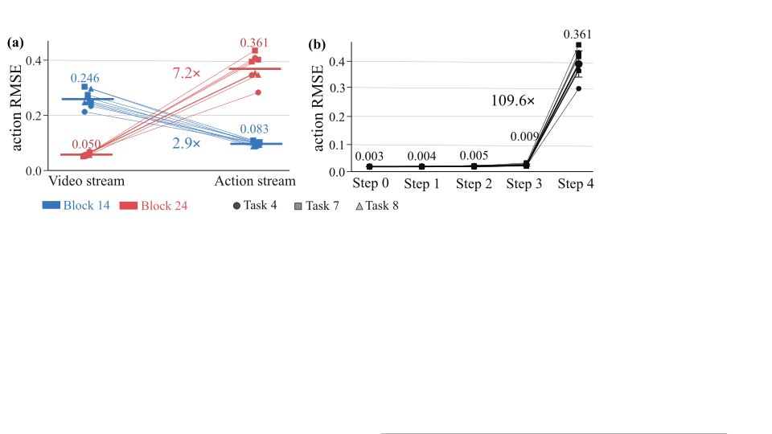
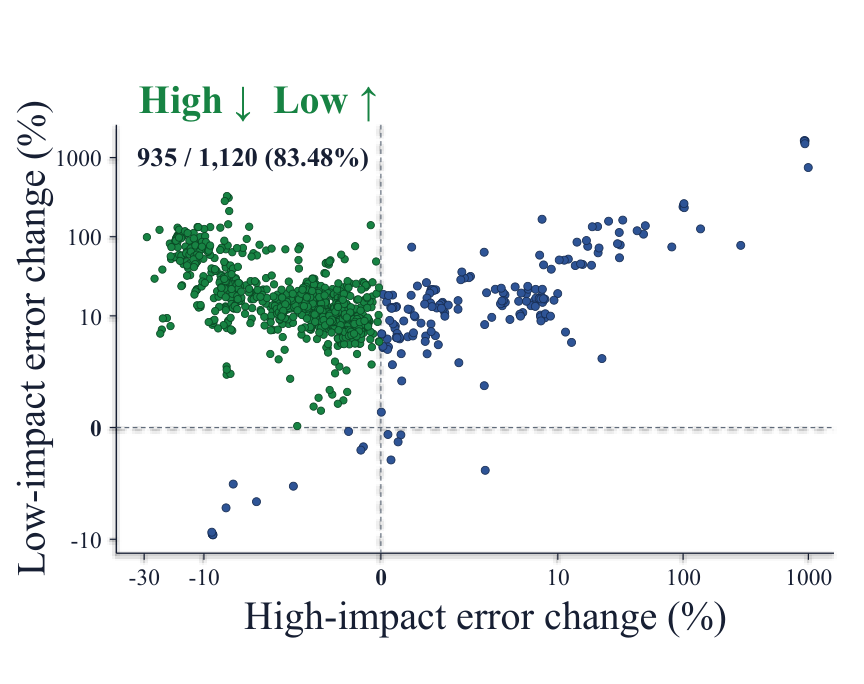
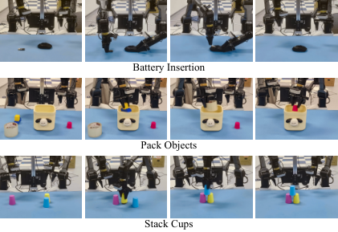

SteerQuant
Steering Quantization Error with Action-Guided Scaling
in World–Action Models
1Tongji 2HKUST 3HIT 4EPFL * Equal contribution
Follow the idea ↓Let action impact
set the course.
In a world–action model, numerical error alone does not tell us how much control will change. SteerQuant directs quantization error toward computations with less influence on final actions.
One shared quantized weight matrix per layer
Fixed bit-widths across streams
Calibration guided by downstream action impact
Mean LIBERO success gap
W4A8 & W4A4 · two WAMsUp to denoising speedup
Cosmos-Policy · W4A4 · RTX 4090Real-robot inference speedup
FastWAMJoint · W4A8 · RTX 4090The same error can
send actions off course.
The influential stream changes across layers and denoising steps. A fixed preference for video or action tokens misses that changing structure.
Matched local-error interventions · Cosmos-Policy · final denoising step

Read the map.
Route the error.
Adjust to the conditions.
Three connected stages turn action impact into quantization choices. Explore the nautical analogy, then see the exact computation below.
A navigation metaphor, not a measured trajectory or a robot path planner.
Action-Impact
Stream Map
Estimate how local quantization errors propagate to the final action. The map identifies which layer–step–stream regions deserve stronger protection.
Where does error matter most to control?
Map → shared channel scaling → stream- and step-specific gains. Inference uses the fixed weights and calibrated lookup table.
EXECUTE WITH RUDDER ↓
Make the steering
efficient to execute.
Rudder fuses the transformations into two low-bit kernels, reducing extra launches and intermediate memory traffic.

See where the error goes.
The error redistribution and ablation study test the mechanism behind the method.

of layer–step units show the intended trade-off.
Less error in high-impact streams; more in low-impact streams. Observed in 935 of 1,120 units.
Cosmos-Policy · W4A8 · 1,800 observations
Both stages benefit from the map.
Standardized action RMSE ↓
Cosmos-Policy · average over W4A8 / W4A4
Table 3. Bar lengths start at zero. See the paper for paired confidence intervals and the calibration protocol.
Measure the destination.
Accuracy and runtime belong together. Explore the two quantization settings under the same evaluation setup.
LIBERO success stays close to full precision. On RoboLab, quantized Cosmos-Edge remains below its full-precision reference. “End-to-end” real-robot inference is reported separately below.
From low bits
to physical actions.
AgileX Cobot Magic · FastWAMJoint · 12 trials per task. Three manipulation tasks connect the quantization result to robot execution.

BF16 → SteerQuant W4A8
Equal-weight average over three tasks
Table 4. Scores are task-specific, not binary success rates. Battery insertion decreases (83.33% → 75.00%); packing and cup stacking improve. Latency excludes robot motion execution time.
Build on SteerQuant.
Explore the full paper ↗BibTeX
@misc{wang2026steerquant,
title={SteerQuant: Steering Quantization Error with
Action-Guided Scaling in World-Action Models},
author={Yunhan Wang and Haodong Wang and Zhiming Liu and
Zicong Hong and Qianli Liu and Xiaoyi Pang and
Yangjia Hu and Quanxin Shou and Yikun Miao and Song Guo},
year={2026},
eprint={2609.39056},
archivePrefix={arXiv},
primaryClass={cs.RO},
url={https://arxiv.org/abs/2609.39056}
}